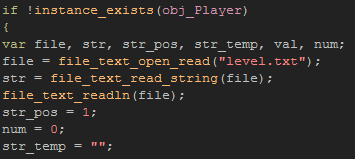
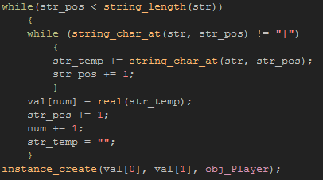
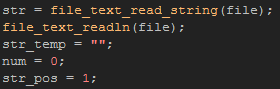
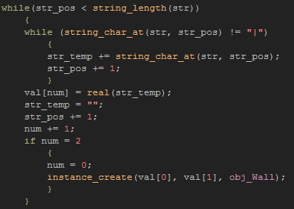
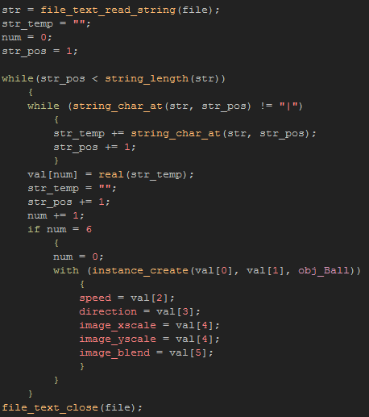

Tutorial
Page 10 of 11
Reading From A Text File
With our data safely saved to a text file, we now need to create the mechanism for loading it back into the game. Now, before starting to code this, lets take a moment to explain the theory of what we are going
to do...
When we saved we wrote a series of data values separated by a "|" symbol, and so, for reading, what we will have to do is read the full string from the text file, then parse it looking for those symbols. We
will do this by reading each individual character from the file and adding it to a sub-string until we find the "|". At that point, we will skip the symbol, and start reading the characters again, but this time
storing them in another sub-string. These sub-strings we will be storing in an array, and then they will be used to create the objects that are in our game.
To start with then, open up the object labelled obj_Level_Load_Control and add in a key pressed event for the letter "L". Next copy the following code:

Since we only want to be able to load the game once in our test room, we add a check for the player object first. In this way, once we have loaded everything we won't be able to do it again without leaving the
room and returning. Next we prepare the local variables we will need, open the file for reading (storing its id) and read the first line from the file into a variable and skip to the next line (which we will read later).
The string we have now stored in the variable "str" is the one we wrote for the player, and so we know that it holds only two values and that these are what we need to get back from it. Note that it
is vitally important that you know exactly what you have written to the file! Saving and loading information from and to files is something that only works when you have complete knowledge of what
has been saved, and in what order.
We have our base string, and we have prepared the local variables necessary to parse it
- "str_pos" is for the position within the main string
- "num" is the current array position to store the completed sub-string in
- "str_temp" is the variable that will hold each sub-string while we parse the main string
What we have to add now is the code that will take our base string and split it into the two component parts (x position and y position) ready to use to create the player:

This code uses two "while" loops. The first is to loop through the complete base string that was read from the file, while the second will create the sub-string array "val" by checking each individual letter of the
main string for the "|" symbol, and while its not found storing the individual sub-string in the correct local variable. Since the base string only holds two values for the player, we KNOW that the "num" variable will
increment from 0 to 1 and so the "val" array has two values at the end of the loop corresponding to the x and y position of the player and we use them to create that object (also note that we have to use the function
real() to convert the string into a real number too!).
The code looks complicated, but hopefully you can see why and how it works. The most important thing to note of course is that it works because we know what values to expect and because the structure of the string
that we wrote to the text file is constant and easily parsed.
Lets do the same now for the walls, first by getting the next string from the file and "resetting" the variables we need:

and then by using another set of "while" loops (as we did for the player) to create the walls:

Notice that we use the "num" variable to check when to create the walls. As it is incremented each time we get a coordinate from the base string, we know that when it reaches two we have an x and a y position,
which is enough to define a wall for the game, so we can create one using the current "val" array values and reset the "num" variable again.
The last part of this loading code block is for the balls. Remember that we saved far more information about the state of each of the ball objects, but the basic functions used to re-create them from the text file are
exactly the same as for the player and the wall objects. The only difference this time is that we will need to increment the "num" variable more times for each object, as we have to get out not just the x an y
position but the color, size etc...

See how this is almost exactly the same as the code block for creating the walls? The only difference this time around is that we are splitting the base string into six different sub-strings per instance, and not two.
Why not test the game again now, and see how this all comes together? If you have done everything correctly you should be able to create a "level" in the save room, then save it and go to the next room where it
can be loaded exactly as it was. In this way you can see that it is not necessary to save EVERYTHING in a game room when saving and that with only a minimum of data you can recreate the player situation
exactly.
Click on the Next button to go to the next page of the tutorial.